Hire me — Looking for an experienced web and product designer? I’m available →
-
我是一位学生，同样也是一位Vloger，有很多想做的事和很多没有实现的梦。 -
1998

-
1998年我在漯河出生啦！
-
Chubby and quiet, good at drawing. It’s always sunny.
- 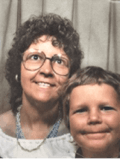
1980sThere is
football;1
there is pop and soft rock;- 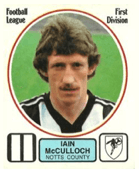
there are
national
parks;
there is
nature;2- 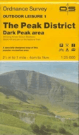
there are
birds.
And then- 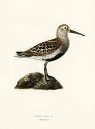
there is teen age.
I get this feeling I’m in motion, a sudden sense of liberty.31987
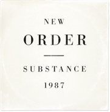The world opens up. Paintings from the 50s; new landscapes.4
Down the way, the road’s divided. Paint me the places you’ve seen.5- 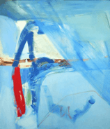
1990Identity.
The past was yours, but the future’s mine.6- 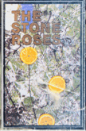
I’m me and nobody else; and whatever people think I am or say I am, that’s what I’m not.7
- 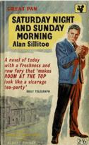
1993The North.
Art school.
All these
accidents
That happen
Follow the dot.8- 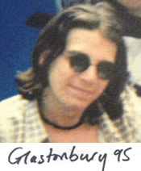
Graduate.
Gravitate.
To London.
And I’d like to just continue to be able to express myself.9- 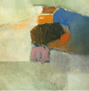
1998To Reykjavík.
It is raw.10
art / land / music / life
Briefly, heima.- 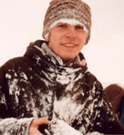
Iceland has offered a new beginning. Ágætis byrjun11
- 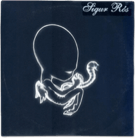
Home.
2000Buy a computer.12
Seduced by the web as a creative space.
Caught between art and online.- 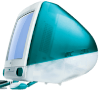
HTML / CSS / CMS / obsess.
Build, play, experiment.13
Transition
Transmission14- 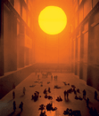
2002Opportunity;
web designer.
Finally, a
real job.15
Bearface.16- 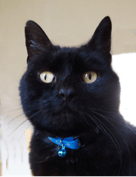
Right place,
right time.
Blog v1.
Clients.
Recognition.- 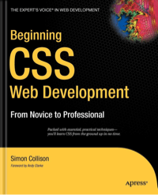
- 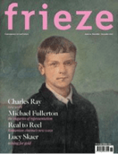
A year in
deep Frieze.19
Employees.
Stress.
Bye, Dad.- 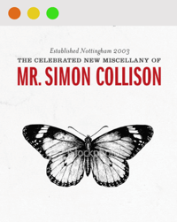
Inquisitive.
What relevance
old ideas? Art?
Travel. Speaking.
Conferences.
Blog v4.20New Adventures.21
2011
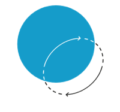NYC. Through the underground, underneath the sky scrapes.22
Always anxious.23
Always adding weight.It wasn’t like a rain
it was more like a sea.24
Make the change;
make less noise.- 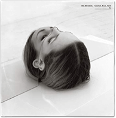
Open a space into which love can flow.
Half of my life, I’ve been waking up.252013
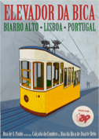Engaged.
Forty.
Our love is like the flowers. The rain, the sea and the hours.262014
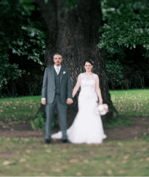Married.
Life is shared.
Newfoundland.
We fall for cities.27- 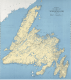
Learn to run.
Mental salvation.
Half marathon.I fill my
mind with
ecology
philosophy
and- 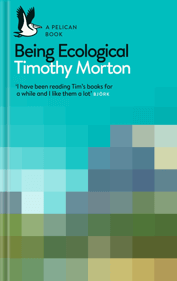
oh
so
much- 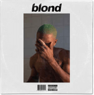
art + music + poetry.28

2017Clarity and realignment.
I’m writing again.- 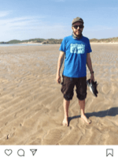
There is much work to be done.
New Adventures
returns.292021
That was the
beginning.
Hello.
I’m Simon.
Footnotes
- ⊙Related article on this site
- ⇗External site
- ^Return to text
- Football: Notts County. Music: my taste ranged from Queen to Kim Wilde. I was also a member of the Heart fanclub. ^
- I loved the Peak District like other kids loved theme parks. No car, so we’d go by bus. I was an obsessive birder. ⊙ ^
- New Order, “True Faith”. The album, Substance, changed my world. ^
- Peter Lanyon and the St Ives artists, but also the abstract expressionists. ⊙ ^
- R.E.M., “Maps and Legends”. ^
- The Stone Roses, “She Bangs the Drums”. ⊙ ^
- Alan Sillitoe, Saturday Night and Sunday Morning, set in my hometown. ⇗ ⊙ ^
- Björk, “Joga”. ^
- DJ Shadow, “Building Steam...”. ^
- I first went to Iceland in 1998 as an artist in residence, returning frequently. ⊙ ^
- Sigur Rós, Ágætis byrjun. ⊙ ^
- A late starter, my first proper computer was an indigo iMac G3. ^
- My first big project was You Are Here, a popular online network for local artists. ^
- David Bowie, “TVC15”. I had a revelation about the web while bathing under The Weather Project, by Olafur Eliasson. ^
- After years working in shops and bars, I joined Agenzia Ltd as a designer/dev. ^
- He was being abused by a neighbour. He started visiting me and I adopted him. ^
- Co-authored some books; wrote my own, Beginning CSS Web Development. ⇗ ⊙ ^
- Erskine Design, LLP. ^
- Single-handedly rebuilt and redesigned Frieze and Frieze Art Fair websites (much admired, and copied). ⊙ ^
- I was fortunate to speak all over the world, mostly between 2009 and 2013. The fourth version of this site was a popular responsive design. ⊙ ^
- New Adventures conference. ⇗ ^
- Beastie Boys, “Root Down”. I was in NY a lot working on a digital music project, and later as a partner of Fictive Kin. ^
- I struggled with generalised anxiety, ate a lot, and neglected to exercise. ^
- The National, “Pink Rabbits”. ^
- The Walkmen, “While I Shovel the Snow”. We were engaged in Lisbon. ^
- New Order, “The Village”. ^
- My wife’s family are from St. John’s. We also love Copenhagen, Tokyo, Stockholm, Montreal, Hiroshima... ^
- Timothy Morton, Being Ecological ⇗; Frank Ocean, Blonde; Norman MacCaig, Between Mountain and Sea ⇗. ^
- After a six year hiatus, we returned in 2019, and again in 2020. ⊙ ^
- I wrote about this timeline. ⊙
- All albums and songs featured in a Spotify playlist. ⇗